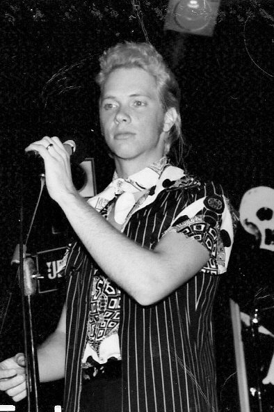

“From my earliest memories, melodies and lyrics have played in my mind. All I needed was a pen and paper, a guitar and microphone for the songs to come alive . One of my greatest joys is to share that music with others.”
Bob started writing songs at the age of 13 and by the time he was 18, had recorded an album of original songs and formed his first band. The band went through many name changes until they settled on The Chromies. The Chromies were based out of Portland, Oregon and recorded some original songs in the studio and played live shows in the area. At 19 years old, Bob left The Chromies to pursue music in the City of Angels. Not long after settling into his new surroundings, Bob joined the band, Fission, based out of Culver City. Unfortunately, because the lead guitar player suffered an injury to his hand, Bob’s music career failed to launch. The silver lining in living 2 years in West L.A. was that Bob was able to write over 100 songs covering his life experiences, faith, love and heartbreak. These would be familiar themes throughout Bob’s musical journey.
At the age of 21, Bob moved back to Portland and reunited with fellow songwriter, Mark Horn to create the band White Coal. For the next 3 years, Bob and Mark wrote and recorded with the band and played every major club in Portland. Bob remembers this period of his life as a time of triumph and tribulation. Playing to a large crowd at Waterfront Park and in front of large crowds at popular clubs were some of the triumphs. Playing in clubs for a handful of people and petty bickering within the band were his low points. This eventually led to the band’s dissolution. After the breakup, Bob turned to his first love of writing and recording acoustic songs that reflected his life experiences.
Bob continued to write and record as the years went by and at one point submitted an original song about learning morals from old TV sitcoms and learning about love watching old Doris Day movies to the national radio show, Dr. Demento. Much to Bob’s delight, he played, “Watching Doris Day” over the radio waves during his 3 hour show.
After recording a gospel album of original songs that was released locally, and years of playing regular live shows in the Springfield, Missouri area, Bob recently turned his sights on creating another album looking back at his drama filled twenties which were full of heartbreak, loss and despair. Unlike his other albums which had only local releases, Faded in the Blue has been released on Amazon and Spotify to reach a much wider audience than was before possible. For Bob, writing and recording this album has been a labor of love and sharing it with so many has been a joyful experience.